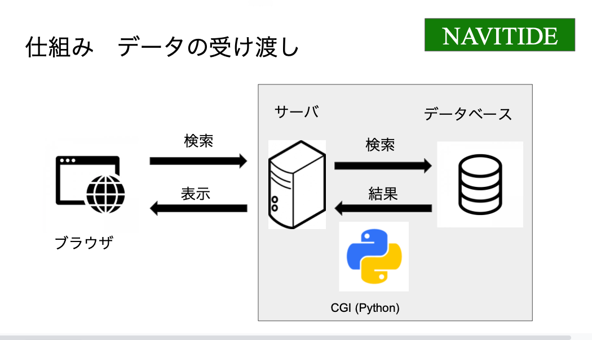
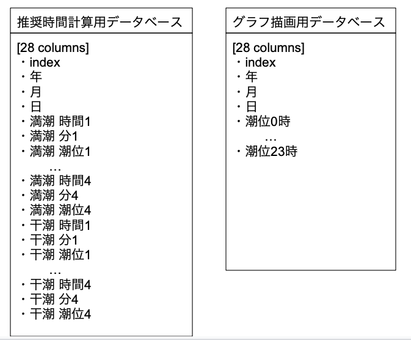

1. Select place name.
2. Select months and days.
3. Clisk the submit button.
(Caution: The results showed up is only the dates that will be low tide while 6am to 6 pm.)
1. If there are dates that you want to know, click it.
2. If not, click "next page"
3. If you want to move back to previous page, click "pre page"
1. See optimal Shiohigari timing, Low tide timing, Low tide height.
2. See the Graph of the Low tide.
About this system
 